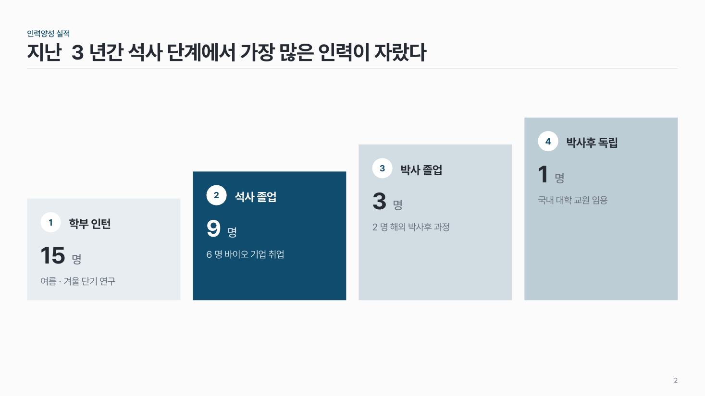
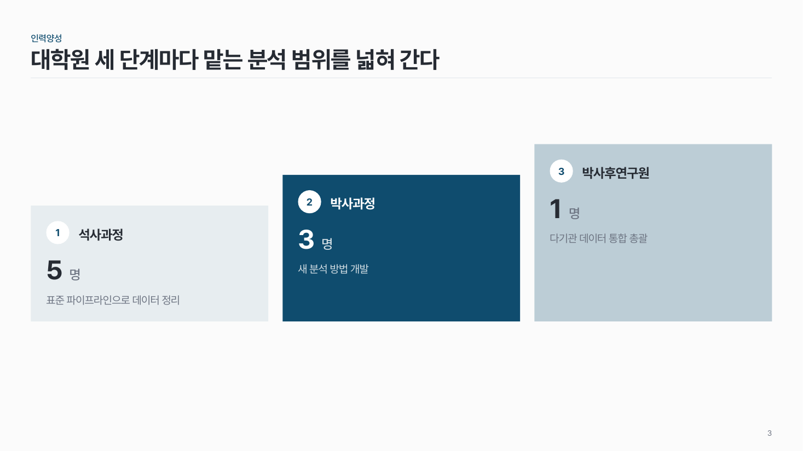

인력양성 단계 people-03
학부 → 석사 → 박사 → 박사후로 올라가는 계단. 단계마다 인원과 역할 한 줄.

이 시안
4단계 · 박사 단계 강조 + 결론 줄
슬라이드 제목: 학부 연구생부터 박사까지 한 회로 연구 안에서 단계적으로 키운다
언제 쓰나
과제 평가의 인력양성 계획 · 실적을 한 장에 보일 때요.
구성
- 같은 폭 칸 3–4개, 높이가 계단처럼 올라가요.
- 칸마다 번호 + 단계 이름, 큰 숫자로 인원, 역할 한 줄.
- 핵심 단계 하나만 진하게, 나머지는 앞 단계일수록 옅게.
지킬 것
- 칸 너비는 모두 같게.
- 역할은 15자 안팎 한 줄.
하지 말 것
- 단계 사이에 화살표를 넣지 않아요. 계단 높이가 방향을 말해요.
- 수상 · 논문 목록까지 칸에 넣지 않아요.
시안 비교
같은 내용을 옵션만 바꿔 그렸어요. 그림을 누르면 크게 보여요.
A4단계 · 박사 단계 강조 + 결론 줄
슬라이드 제목: 학부 연구생부터 박사까지 한 회로 연구 안에서 단계적으로 키운다

B4단계 · 석사 단계 강조
슬라이드 제목: 지난 3년간 석사 단계에서 가장 많은 인력이 자랐다

C3단계 (박사후 없음)
슬라이드 제목: 대학원 세 단계마다 맡는 분석 범위를 넓혀 간다